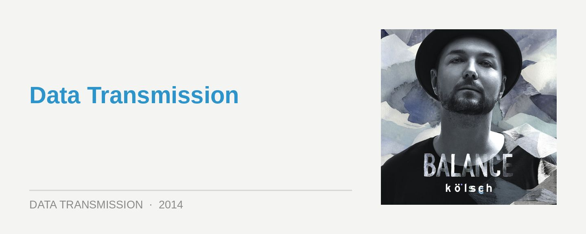

Balance presents Kölsch
Label: Balance
Release: Out Now
‘Balance presents Kölsch’ makes you remember just how good a mix compilation can actually be. The Copenhagen-based producer himself told Data Transmission that they can often be a little “boring and redundant”; and he makes a good point. Whether it’s your standard collection of upfront tunes mixed together predictably, or a collection of records thrown together to showcase a record label; all too often they’re throwaway, sufficient for a quick fix though failing to tell a story in any kind of vivid detail. But that is definitely not the case here.
The melodies of Kölsch hold a special place in the clubbing zeitgeist of 2014. With underground house once again embracing its dramatic side, after years of featuring nothing anywhere near as extravagant as a vocal, we’re hearing some most excellent records indeed. However, the appeal is how this drama meshes with the deeper elements, and the juxtaposition of the different tones and feelings. ‘Balance presents Kölsch’ makes for a perfect showcase of this.
Kölsch has also put in the necessary man-hours to make sure his ‘Balance’ mix is something special. There’s been a lot of love and care taken in the studio to blend the textures, and to make sure that the eclectic approach he’s taken is executed properly. Admittedly, it’s nothing as elaborate as the 100+ records that Joris Voorn managed to stitch and splice into his own ‘Balance’ entry, but nonetheless, Kölsch is definitely also “painting with sound” here.
He opens on the swelling synth arpeggios of Galaxy 2 Galaxy’s 1993 classic ‘Journey Of The Dragons’; the first indication he’s shooting for a timeless vibe. However, he brings us quickly back to the present with a smooth segue into the moody vocals of John Talabot’s mix of Pional’s It’s All Over. It’s the first example of Kölsch being daring enough to make a few unpredictable sonic choices; moving around the different tones and textures like jigsaw pieces.
If the mix opens with a plethora of extravagant melodies, it’s not long before Kolsch takes us into deeper, dubbier territory with Henrik Schwarz’s ‘Lockstep’ scorcher, which he somehow threads into a three-way encounter with the dubby atmospheres of Minilogue’s ‘Endlessness’, plus the piano twinkles and Tom Yorke vocals of Radiohead’s ‘Videotape’. It’s the kind of creative thinking that you just don’t get that often in mix compilations.
The remainder of ‘Balance presents Kölsch’ is peppered with many other such moments. Often after tunneling us through some particularly swirly spaces of dancefloor weirdness, we’re boosted high again with euphoric choices from Maceo Plex, Kölsch’s own ‘Punchbuggy’, or the tinder keg of sweaty PLUR that is Tale Of Us and Mano Le Tough’s take on Caribou’s ‘Can’t Do Without You’.
He saves the big guns for last though; his own 10-minute remix of Coldplay’s ‘A Sky Full of Stars’, a mission statement for the Kolsch project of meshing the underground and overground, if ever there was one. And this is before he finishes on an overwhelming rush of emotion; Joris Voorn’s remix of Audion ‘Dem Howl’ closing out the mix in an indescribably epic fashion; a whisper away from vocal trance, it unleashes emotions in a way not heard for a long time.
There’s such an assortment of different moods on ‘Balance presents Kölsch’ that it’s tough not to be impressed. Stylistically it goes from timeless electronica, to deep techno, to soaring progressive house, and back again. Thematically, it also manages to be a pleasing amount of different things at the same time; deep and euphoric, sweeping and focused, eclectic and coherent.
It’s also a mix with the kind of resonance that you just don’t hear that often anymore. There’s a sense of the transcendental dancefloor experience, which you only get from embracing those emotions and really letting go; something that seemed to get a little lost in the heads-down seriousness of underground dance over the past few years. If Kölsch can take just a little credit for helping bring that back, it’s a mighty achievement indeed. Luscious storytelling in sound.
Words: Angus Thomas Patterson